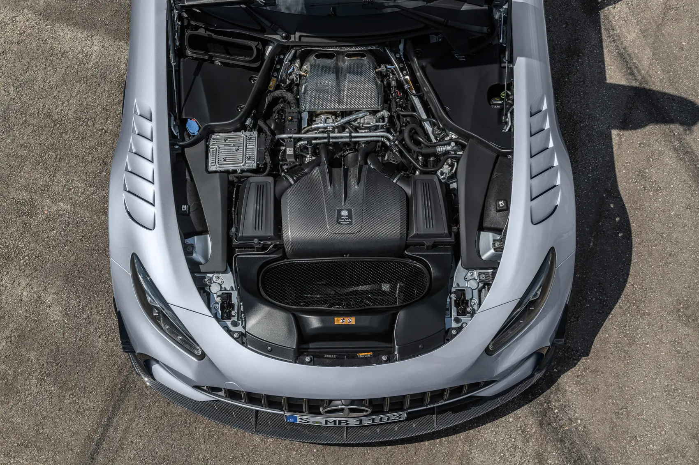
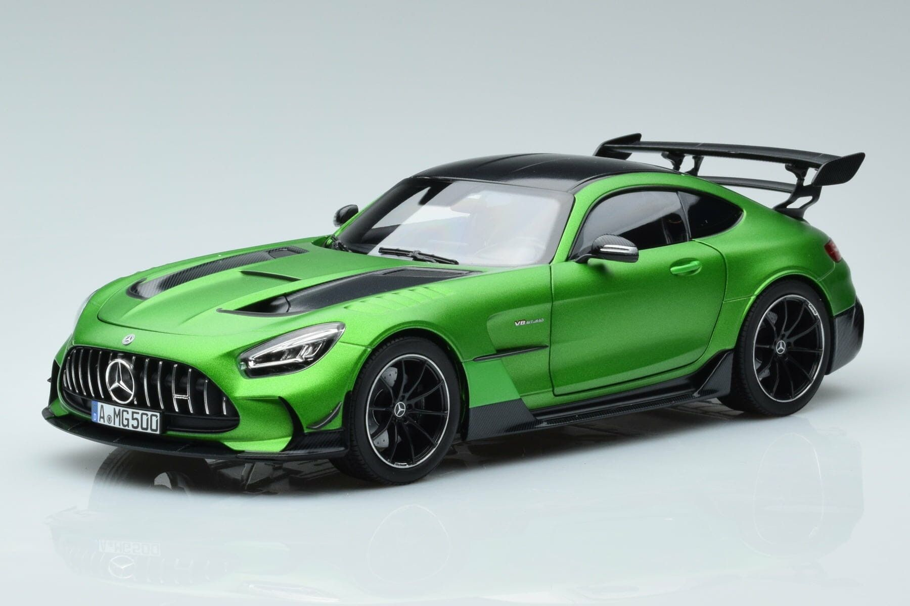
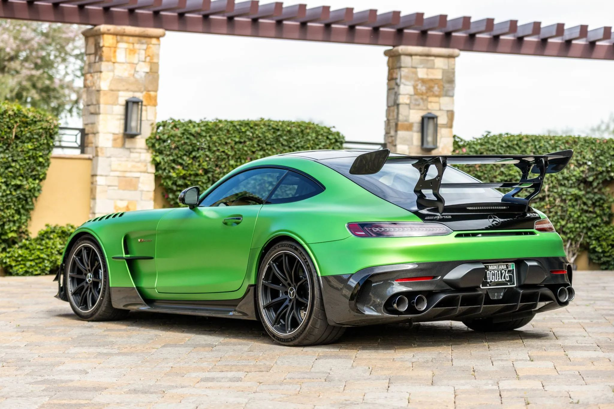

AMG GT Black Series




A Mercedes-AMG GT Black Series a német autóipar egyik mesterműve. Ez a modell a motorsport tapasztalataira épül, és úgy hozza el a versenypálya élményét az utcára, hogy közben megőrzi a Mercedes luxusát és presztízsét.
Főbb jellemzők:
- Erőteljes motor: 4.0 literes V8 biturbó motor, amely 730 lóerőt biztosít, így ez a legerősebb AMG V8, amit valaha utcai autóba építettek.
- Lenyűgöző gyorsulás: 0–100 km/h sebességre mindössze 3,2 másodperc alatt képes, végsebessége pedig eléri a 325 km/h-t.
- Aerodinamikai kiválóság: Állítható első splitter és hátsó szárny, valamint aktív aerodinamikai elemek a maximális tapadásért és leszorítóerőért.
- Versenyhangulatú belső tér: Alcantara kárpit, karbon díszítőelemek és AMG Performance ülések teremtik meg a versenypályás élményt.
- Limitált széria: A Black Series modellek ritkasága miatt különösen keresettek, és igazi gyűjtői darabnak számítanak az autórajongók körében.
A Mercedes-AMG GT Black Series nem csupán egy autó – ez egy műalkotás, amely a teljesítményt, az innovációt és az exkluzivitást egyesíti egy lenyűgöző formában. Azok számára készült, akik nem ismernek kompromisszumot, ha vezetési élményről van szó.